GAN的基本思想
生成器
GAN的中文名叫做对抗生成网络，生成网络的一大特点是让AI具有创造力，所以和CNN、Transformer的一大不同点就是对于一个输入而言，由于生成器同时接受一个随机变量，所以输出并不是固定的。如下图所示，生成器接受x和随机变量z作为输入，其中随机变量z需要来自一个简单到我们可以写出其表达式的随机分布（这样我们才能从中采样），然后输出y，y是一个复杂的随机分布。
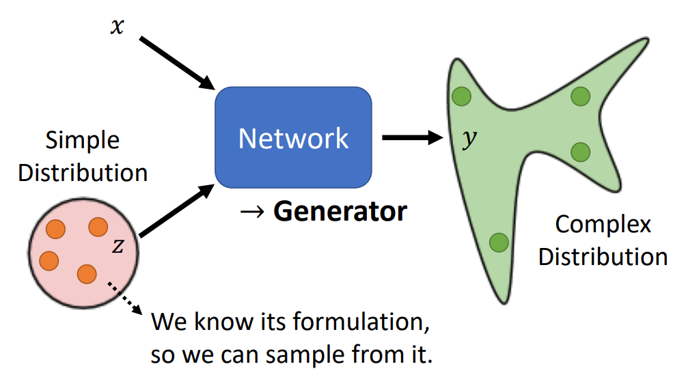那么为什么输出需要是随机分布，而不是像CNN一样固定的值呢？最重要的原因是，在很多问题中答案不一定是唯一的，如果使用监督学习，可能有两大坏处：
-
给出的结果可能是模糊、不合实际的
比如在某个小游戏的视频预测任务中，AI需要根据之前的帧产生接下来的动画，如果使用监督学习，会发现在路口处小人可能会分裂成两个，原因是训练资料内在入口处小人可能向左转或向右转，这两种情况本来都是合理的，但是如果使用监督学习，AI在训练时不能明确哪种是正确的答案，那么为了使得loss最小，AI就会给出模棱两可的答案——分裂，而这可能是不合实际的。
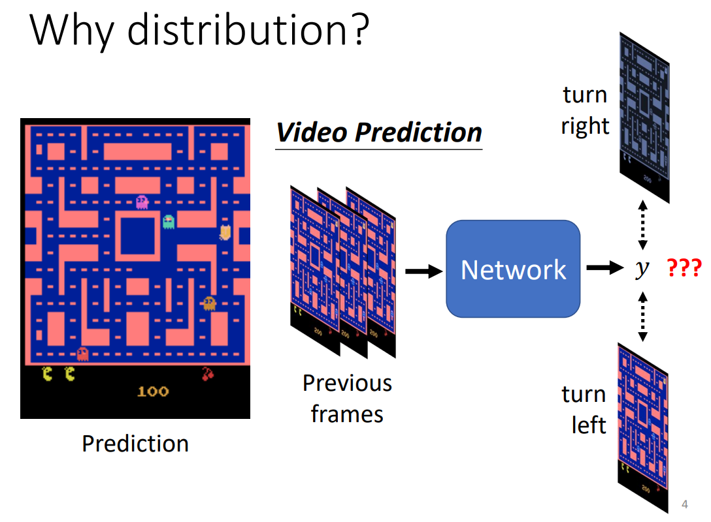 -
AI缺乏“创造力”
AI在某些特定的人物需要一定的“创造力”，比如让AI绘画，要求画出有红眼睛的人物，答案显然不是唯一的；又如让AI回答“你知道辉夜是谁吗？”，也有不止一种回答。
“对抗”的含义
为什么起名叫对抗生成网络，原因来自生成器的训练是伴随着它的“对手”——鉴别器的训练进行的。在生成器的训练中，我们会同时训练一个鉴别器，用来判定生成器的表现。
以生成二次元人物头像为例：生成器要生成二次元人物头像，而鉴别器要鉴别生成的图像像不像人工绘制的二次元人物头像，此时为了“骗过”鉴别器，生成器要让自己生成的图像更像真人绘制的二次元人物头像，而鉴别器为了更好地把生成器生成的二次元头像检查出来，也要提升自己的鉴别水平，最终二者相互促进，使得生成器生成非常逼真的二次元人物头像。
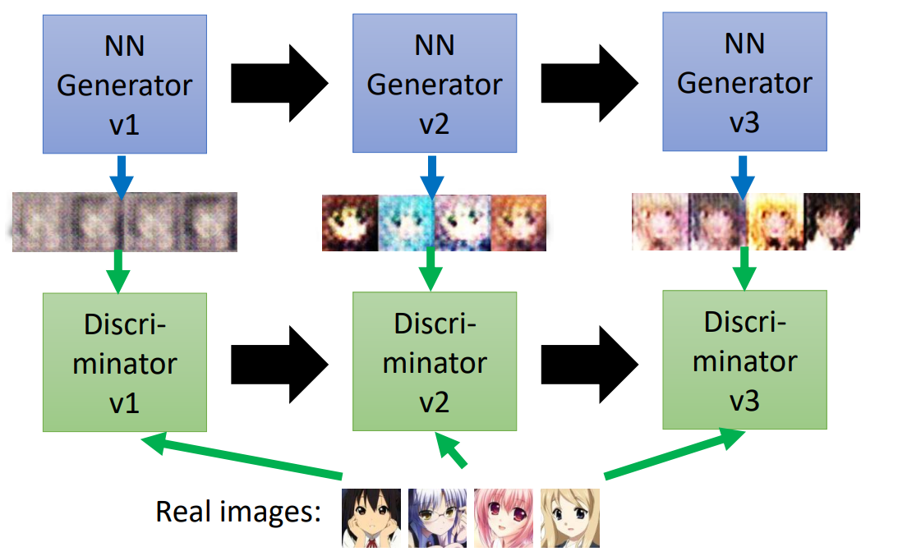训练过程概述
GAN的训练过程，大致可以概述为如下步骤：
-
固定生成器参数，训练鉴别器
因为一开始未经训练的鉴别器是毫无鉴别功能的，所以我们应当先训练鉴别器。训练时同时给鉴别器喂入真实样本（标记为1）和生成器随机生成样本（标记为0）。
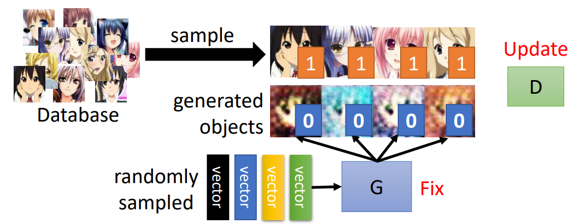 -
固定鉴别器参数，训练生成器
在鉴别器有一定鉴别功能、能给生成器的表现打一个相对合理的分数后，就可以开始训练生成器了。此时将生成器和鉴别器拼接成一个大网络，固定鉴别器参数，更新生成器参数，使得最终输出分数能提高。
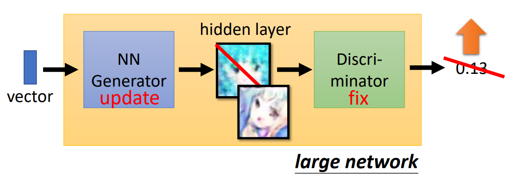 -
重复前两个步骤
通过重复，最终可以获得良好的生成器。下图概述了上面两个步骤
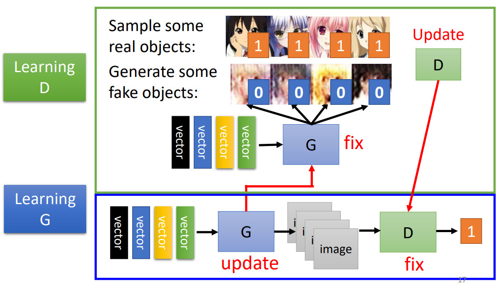
GAN的理论
目标函数
让我们先考虑生成器的优化目标，以图像生成任务为例，对于生成器而言，目标就是让产生的图片的分布和真实图片的分布是类似的。数学表达式可以写成
其中
然后再考虑鉴别器的优化目标，对于鉴别器而言，目标是能鉴别出生成的图片。那么在鉴别器优化后，由于鉴别器能力的提升，算出的
其中
上式中第一项代表鉴别器对真实图片的输出，第二项代表鉴别器对生成图片的输出，
这是一个min-max模型，代表着鉴别器和生成器训练时的“对抗”。
JS divergence的缺陷
刚刚我们提到了用JS divergence来衡量生成图片和真实图片之间的差异，但是JS divergence存在比较严重的问题。
生成图片分布
而在

Wasserstein distance
在https://arxiv.org/abs/1701.07875中，作者提出了WGAN所用到的Wasserstein distance。Wasserstein distance衡量的是将
此时鉴别器有约束条件，这个条件要求鉴别器需要足够平滑，如果没有这个条件，鉴别器的训练会不收敛。
WGAN依然有缺点，有几种提升方案
- 参数限制（Force the parameters w between c and -c）
- WGAN-GP（gradient penalty）https://arxiv.org/abs/1704.00028
- SNGAN（Spectral Normalization → Keep gradient norm smaller than 1 everywhere）https://arxiv.org/abs/1802.05957
评价生成器
评价指标
图像质量
为了评估生成的图像与真实图像是否相似，可以用一个CNN来对生成的图片进行分类，如果分类结果是明确的，即有一类的值很高，那么说明生成的图像质量很好。
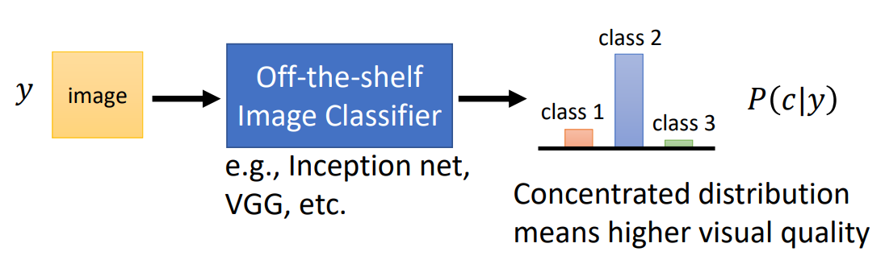图像多样性
除了评估图像质量以外，还需要评估图像多样性，因为哪怕生成的图像质量很好，如果遇到了mode collapse，那么可能生成的图像都十分相似，这显然不是我们想要的。
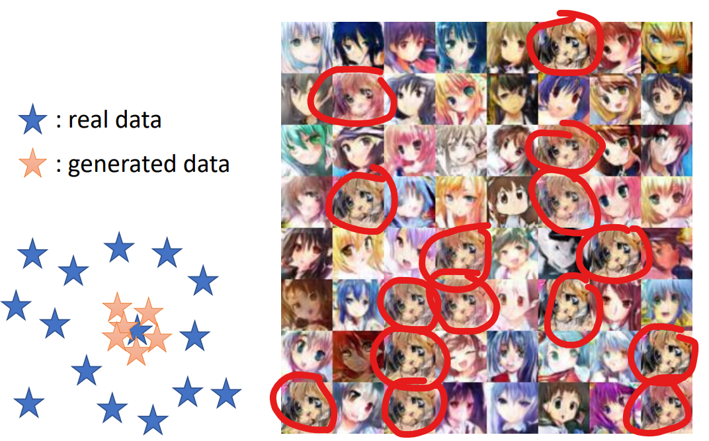除了mode collapse以外，还可能遇到mode dropping的问题，就是生成的图片看上去多样性还行，但是实际上只是真实分布中的一部分而已。
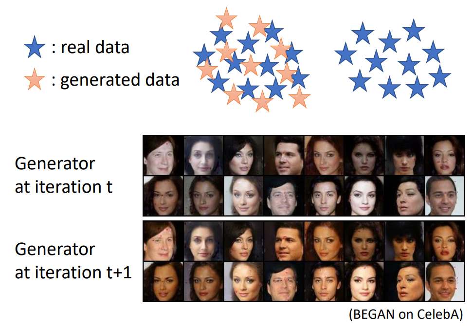评价函数
Inception score
Inception score借助CNN，将所有生成图片经过CNN后的输出取平均，如果各类的值比较平均，那么说明多样性是足够的，此时Inception score较高。同时Inception score也会考虑单张图片经过CNN后的分布，如果分布集中，说明图像质量高，此时Inception score较高。
总的来说，Inception score综合考虑图像质量和图像多样性，图像质量和多样性越高，则Inception score越高。
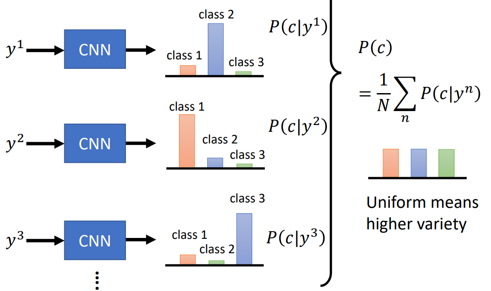FID
FID衡量的是生成图片分布和真实图片分布的距离。同样借助CNN，将生成图片和真实图片经过CNN，不同的是此时收集的是softmax前的输出，最后得到两个分布，将两个分布视为高斯分布，然后计算两个分布间的Frechet distance。显然FID越小代表两个分布约接近，说明生成器性能更佳。
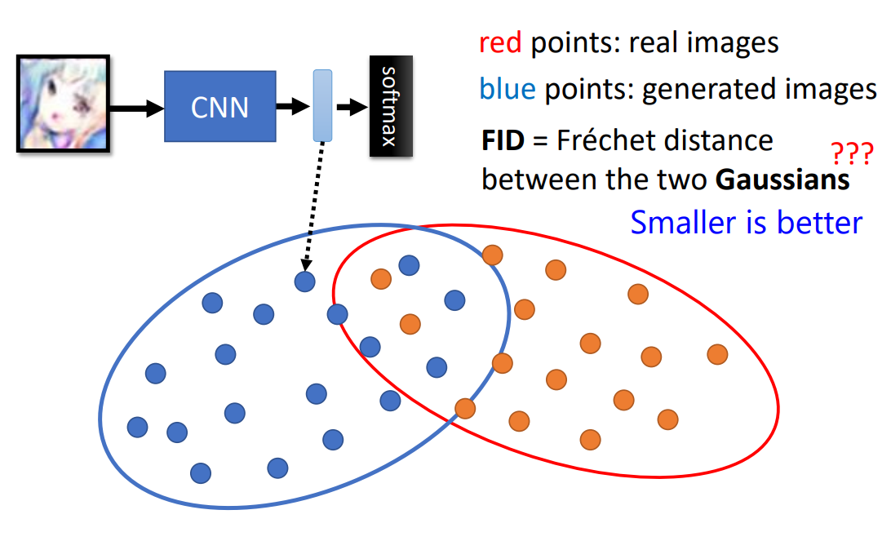Conditional GAN（条件式生成）
很多时候，我们希望GAN能生成符合一定条件的结果，比如AI绘画里我们会根据自己的喜好提出一些要求。所以就需要Conditional GAN。
训练Conditional GAN的时候，以生成图片任务为例：对于生成器而言，我们以条件作为x，伴随着随机变量z输入；对于鉴别器而言，应当同时输入图片和条件，以及一个标量（这个标量仅当图片为真实图片，且与要求对应时才是1，否则都是0），鉴别器此时输出的标量一方面衡量图片是否是真实图片，另一方面还要衡量图片和条件是否对应。
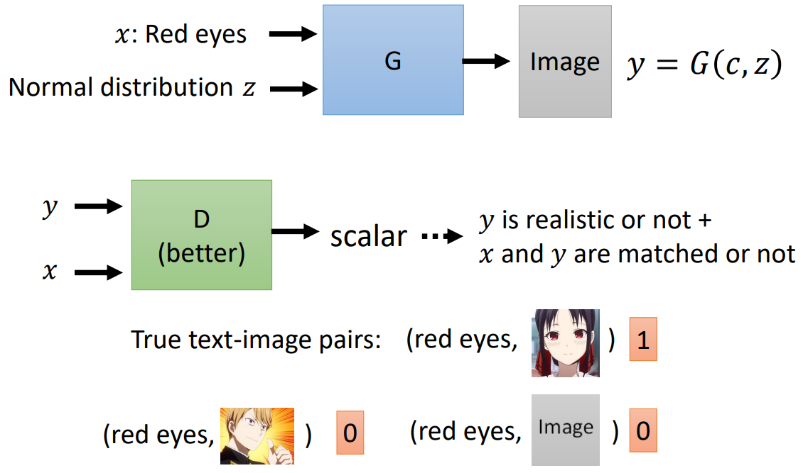Conditional-GAN+监督学习
但是有时AI会“过于具有想象力”，以至于超出条件的约束，比如在通过建筑结构图生成建筑照片的时候，只用GAN的结果相比结构图多了一个类似烟囱的结构。为了克服这个问题，有时会结合GAN和监督学习，将AI的“想象力”控制在合理的范围内。
比如在[1611.07004] Image-to-Image Translation with Conditional Adversarial Networks (arxiv.org)内，在目标函数中包含了L1范数
Cycle-GAN
在很多时候，我们会遇到没有成对的输出和输出的数据集，比如想要做真人头像和二次元人物头像的风格转换，但是很多真人头像都没有对应的二次元人物头像。
为什么需要Cycle-GAN
以图片风格转换为例，如果使用一般的GAN，那么可能导致生成的图片风格正确，但是和输入的图像没什么关系，比如把李宏毅老师的头像输入，可能产生的是辉夜的头像。那么如果用Conditional-GAN做风格转换，往往又需要成对的训练资料。
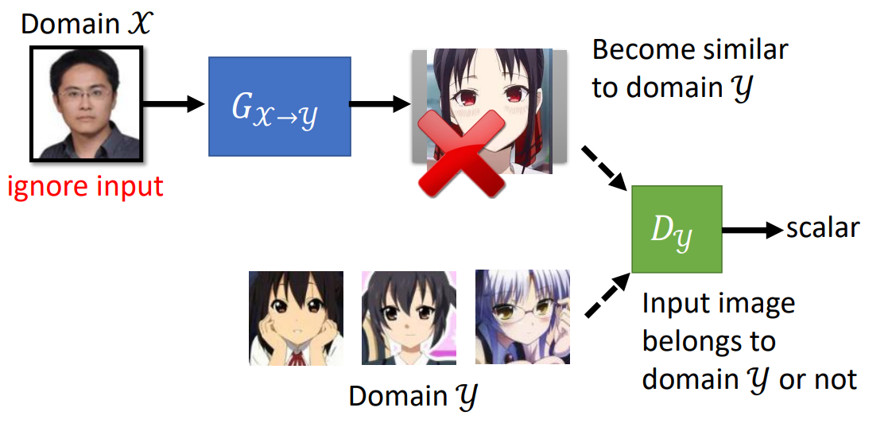Cycle-GAN的结构
以风格转换为例，为了保证风格转换后的图片和原始图片相关，会再加入一个用于将风格转换后的图片转换回原始风格的生成器，那么为了要将风格转换后的图片能转换回原始风格，就会要求生成的图片和原始图片是相关的。相应的，我们需要一个鉴别器来判断转换回原始图片的效果。所以如下图所示Cycle-GAN包含了将两种风格的图片互相转换的生成器和对应的鉴别器。
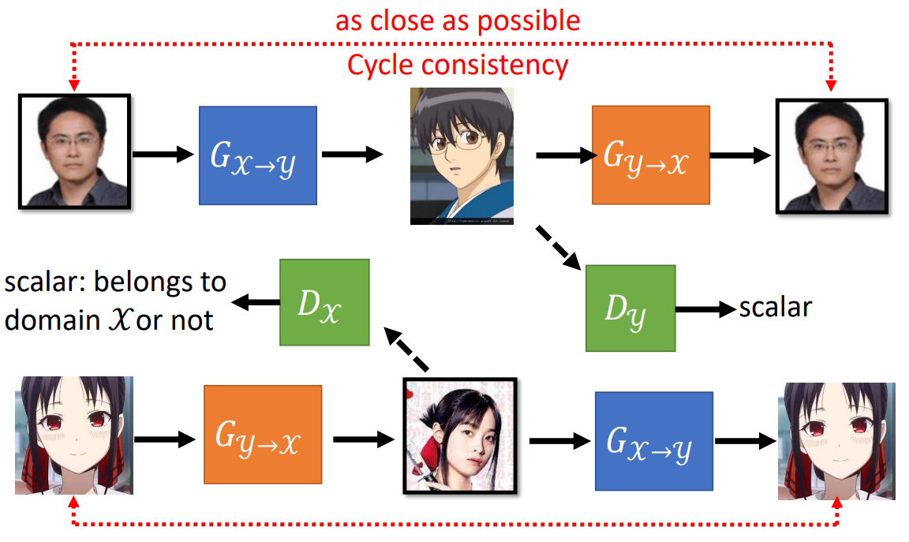Cycle-GAN的其他应用
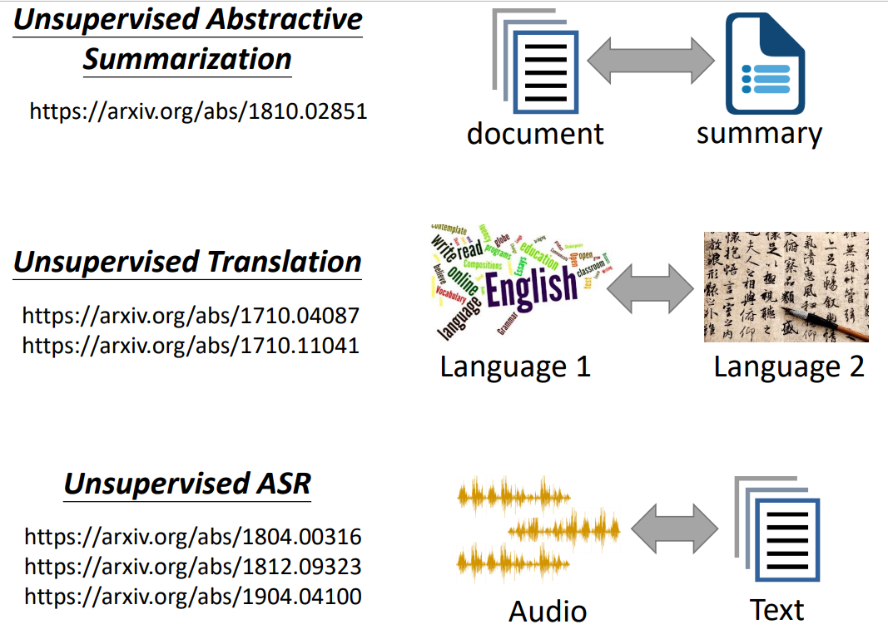作者: 核子